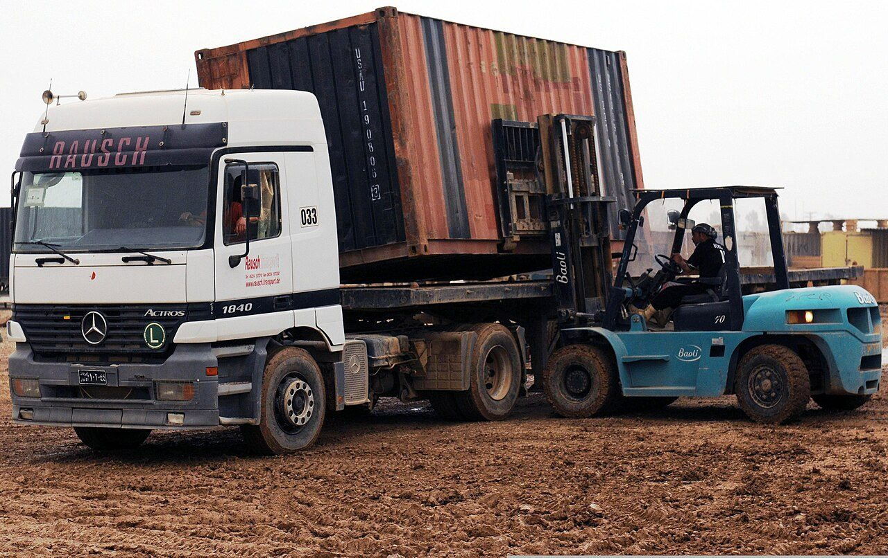
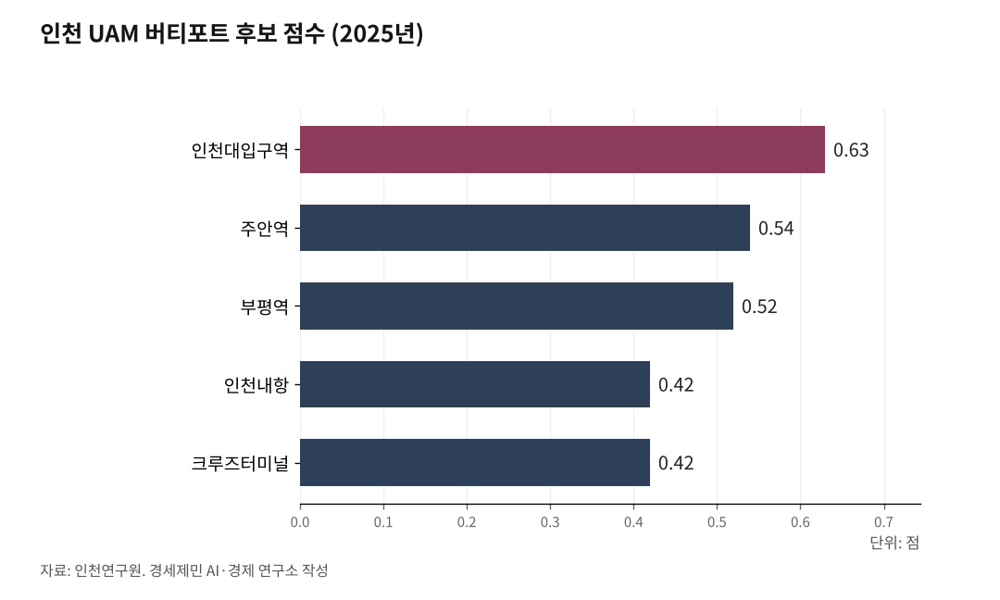

[인천항 복합물류②] 인천항을 나서는 화물은 모두 트럭에 오른다
2023년 1월 축항선이 끊기며 인천 지상 화물철도가 사라졌다
내륙기지는 의왕 하나, 하늘길 잣대는 아직 사람이다
AI경제저널=김갑봉 기자 | 배가 닿으면 화물은 뭍에서 길을 고른다. 국내 복합운송과 국제 복합운송은 다른 자로 잰다. 인천항에 고를 길이 몇 개나 남아 있는지 사실로 짚는다.

인천 화물철도가 끊긴 날
인천에는 화물을 싣고 다니던 철길이 있었다.
축항선은 1959년 2월 24일 영업을 시작했다. 인천역과 인천남부역을 잇는 화물 철도다. 수입 유연탄과 냉연코일과 시멘트와 벽돌을 실어 날랐다.
2012년 남부역이 폐지되며 건축자재 취급이 멈췄다. 남항 석탄부두와 인천역을 잇는 구간은 그 뒤로도 남았다. 석탄이 물동량 대부분을 채웠다.
그 석탄은 석탄부두선과 축항선과 경인선을 거쳐 국내 각지로 갔다. 석탄부두에 선로가 닿아 있어 배에서 내린 석탄을 곧장 화차에 실었다. 인천역까지 나가는 구간을 철도가 맡았다.
2022년 6월 석탄부두선이 폐선됐다. 2023년 1월에는 축항선이 폐선됐다. 경인선과 이어져 있던 인천 지상 화물철도가 이로써 모두 사라졌다. 축항선과 석탄부두선과 인입선과 동양화학선과 주인선과 제3부두선이 그 목록이다.
인천항에서 철도로 화물을 빼낼 길은 이때 닫혔다.

월곶에서 갈라지는 선 하나
지금 인천항에 걸려 있는 철도 계획은 인천신항 인입선 하나다. 수인분당선 월곶역에서 갈라져 송도국제도시 11공구를 지나 인천신항에 닿는 노선이다. 이 노선은 제3차 국가철도망 구축계획(2016~2025년)에 들어갔다. 제4차 계획(2021~2030년)에서는 추가 검토 사업으로 밀렸다.
인천신항선은 여객이 아니라 화물을 싣는 노선이다.
인천시는 2024년 2월 29일 제5차 계획에 반영해 달라고 국토교통부에 요청했다. 제5차 계획은 2026년부터 2035년까지 국가 철도망의 큰 틀을 정하는 법정계획이다.
국가계획에 올라야 사전타당성조사와 예비타당성조사와 기본계획으로 넘어간다. 올라가지 못하면 그 사업은 첫 삽을 뜰 절차 자체가 없다.
김윤덕 국토교통부 장관은 국회 예산결산특별위원회에서 "공론화 과정도 거쳐야 한다"며 "10~11월 안에는 끝낼 예정"이라고 말했다. 인천시가 올려 달라고 낸 사업은 다섯이고 인천신항선이 그 가운데 있다.
내륙기지는 의왕 하나다
ICD(Inland Container Depot, 내륙컨테이너기지)는 항만 밖에서 컨테이너를 모으고 보관하고 통관하는 시설이다. 경기 의왕내륙컨테이너기지는 1992년 물류비를 줄이려고 세웠다. 한국철도공사가 지분 25%를 쥐고 민간 물류기업이 나머지를 나눠 갖는다.
터는 75만2680㎡이고 하루에 1900TEU를 다룰 수 있다. 상하행 26개 열차가 부산항과 부산신항과 신광양항을 오간다. 수송 실적은 내려앉았다. 2011년 50만2366TEU에서 2016년 37만9679TEU로 줄었다.
한국교통연구원 집계를 보면 2015년 의왕ICD 철도 수송 실적의 99.97%가 부산진과 북철송장과 남철송장과 신광양항에 몰렸다.
정부는 도로 화물을 철도로 옮기는 화주와 운송사업자에게 물류비 차액을 보조한다. 전환교통 지원사업이다.
국토교통부는 2010년부터 2021년 3월까지 보조금 325억원을 집행했다고 밝혔다. 탄소 배출을 약 194만톤 줄인 효과로 추산했다. 2021년 지원 총액은 28억8000만원이다.
남은 길은 도로 하나다
인천항 화물이 배에서 내려 처음 타는 것은 트럭이다. 드레이지(drayage)는 항만과 배후단지를 오가는 단거리 트럭 수송을 가리킨다.
트럭이 닿는 자리는 넓어졌다. 인천항만공사는 2025년 10월 31일 아암물류2단지 2단계 조성사업 준공 승인을 인천지방해양수산청에서 받았다. 2022년 6월 착공해 38개월이 걸렸다. 888억원을 들여 물류용지 58만9000㎡를 만들었고 상하수도와 전기와 통신도 함께 깔았다.
성낙호 인천항만공사 항만건설실장은 "항만배후단지를 적기에 공급"했다고 말했다. 인천항만공사는 이 단지를 인천항이 동북아 물류 중심항으로 도약할 발판으로 제시한다. 인천시는 인천신항 인입선을 놓으면 인천신항대로 진입로에 몰리는 화물차 혼잡도 풀릴 것으로 기대한다. 인천에서 부두와 배후단지와 내륙기지를 잇는 구간은 지금 도로가 맡는다.
하늘길 잣대는 아직 사람이다
도심항공교통(UAM, Urban Air Mobility)은 전기 수직이착륙기가 버티포트 사이를 오가는 교통체계다. 기체는 무게 600kg 이상이고 고도 300~600m 회랑을 난다.
국토교통부는 1단계 실증을 2023년 8월 전남 고흥 개활지에서 열었다. 2단계 도심 실증은 2025년부터 인천 아라뱃길 일대에서 한다.
인천시는 국내에서 처음으로 UAM 조례를 만들었다.
인천연구원은 2025년 10월 버티포트 후보지 19곳을 견줘 순위를 냈다. 교통 분야 전문가 30명에게 물어 일관성을 갖춘 22명 답을 가중치로 썼다. 1위는 인천대입구역 0.63점이고 주안역 0.54점과 부평역 0.52점이 뒤를 이었다.
인천내항은 8위 0.42점이고 크루즈터미널은 9위 0.42점이다. 평가에 쓴 잠재수요는 통근 통행을 물어 뽑은 값이다. 제주는 스마트공동물류센터 안에 버티포트를 두는 계획을 세웠다.
철길은 끊겼고 새 철길은 계획에 머물러 있다. 그 사이 인천항 화물은 날마다 트럭에 오른다.
※ 이 기사는 AI 프로그램 클로드를 활용해 작성했습니다.
참고문헌
가. 공식 발표자료와 공공기록
·"도로→철도 화물 운송전환 보조금…올해 28억 8000만원 지원", 대한민국 정책브리핑(국토교통부), 2021년 3월 16일. 2010년 이후 보조금 325억원, 탄소 약 194만톤 저감 추산, 2021년 지원 총액 28억8000만원. https://www.korea.kr/news/policyNewsView.do?newsId=148885075
나. 연구보고서와 논문
·인천연구원, 「인천시 도심항공교통(UAM) 복합환승체계 기본 구상」, 한국ITS학회 추계학술대회 발표자료, 2025년 10월. 버티포트 후보지 19곳 평가, 인천대입구역 0.63점 1위, 주안역 0.54점, 부평역 0.52점, 인천내항 0.42점 8위, 크루즈터미널 0.42점 9위. 전문가 30명 조사, 유효 22명. K-UAM 그랜드챌린지 1단계 고흥 2023년 8월, 2단계 도심 실증 인천 아라뱃길 2025년. 전기 수직이착륙기 무게 600kg 이상, 운항 고도 300~600m. https://www.ii.re.kr/storage/data/2026/01/22/DATA_ATTACH_1769066224684.pdf
다. 언론 보도
·박길상, "[오늘의 인천소사] 인천항 화물 수송 축항선 영업개시", 인천투데이, 2025년 2월 24일. 축항선 1959년 2월 24일 영업 개시, 2012년 남부역 폐지, 2022년 6월 석탄부두선 폐선, 2023년 1월 축항선 폐선. https://www.incheontoday.com/news/articleView.html?idxno=263351
·박규호, "인천시, 인천신항선 도입 요청··· 서울4호선 송도 연장도 가능", 인천투데이, 2024년 3월 8일. 월곶역 분기 노선, 제3차 반영과 제4차 후보 조정, 2024년 2월 29일 제5차 반영 요청, 인천신항대로 화물차 혼잡. https://www.incheontoday.com/news/articleView.html?idxno=242925
·박규호·인투아이, "GTX-D냐 대장홍대선 청라연장선이냐··· 인천 서북부 철도망 '중복' 쟁점", 인천투데이, 2026년 9월 4일. 김윤덕 국토교통부 장관 발언, 제5차 계획 2026~2035년, 국가계획 반영 뒤 후속 절차, 인천시 요청 사업 5개에 인천신항선 포함. https://www.incheontoday.com/news/articleView.html?idxno=323219
·정원기, "인천항만공사, 아암물류2단지 2단계 조성사업 완료", 엔지니어링데일리, 2025년 10월 31일. 2022년 6월 착공 38개월, 888억원, 58만9000㎡, 성낙호 항만건설실장 발언. https://www.engdaily.com/news/articleView.html?idxno=20883
·김동민, "현장취재/ 철도물류의 심장을 찾다 의왕내륙컨테이너기지(의왕ICD)", 코리아쉬핑가제트, 2017년 4월 28일. 1992년 설립, 한국철도공사 지분 25%, 터 75만2680㎡, 하루 수송능력 1900TEU, 상하행 26개 열차, 2011년 50만2366TEU에서 2016년 37만9679TEU, 한국교통연구원 집계 2015년 기준 의왕ICD 철도 수송 실적 99.97% 집중. https://www.ksg.co.kr/news/news_print.jsp?bbsID=news&pNum=113185
사진 출처
· [대표사진] Sgt. Edwin Gray, U.S. Army, "Iraqi container truck, 2011.jpg", 위키미디어 공용, 퍼블릭 도메인, https://commons.wikimedia.org/wiki/File:Iraqi_container_truck,_2011.jpg
※ 이 기사는 인공지능을 활용해 작성했습니다.
관련기사
저작권자 © AI경제저널 무단전재 및 재배포, AI학습 및 활용 금지